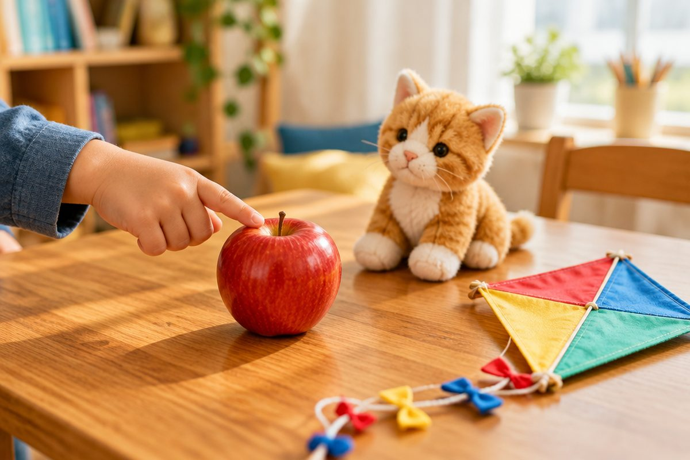

전체 단원 › 1~2학년 › 영어 › 1단계 · 글자 소리 a~m (파닉스)
글자는 어떤 소리를 낼까? a부터 m까지

글자에는 이름도 있고 소리도 있어요. 오늘은 a부터 m까지 소리를 들어 봐요.
이름과 소리는 달라요
a의 이름은 '에이'예요.
apple에서는 '애' 소리가 나요.
이걸 글자 소리라고 해요.
a - apple · b - bear
a부터 f까지 소리
낱말 첫소리를 잘 들어요.
cat은 '크' 소리로 시작해요.
fish는 윗니로 아랫입술을 살짝 물어요.
a - apple · b - bear · c - cat · d - dog · e - egg · f - fish
g부터 m까지 소리
hat은 숨을 '흐' 내쉬어요.
lion은 혀끝을 윗니 뒤에 대요.
moon은 입을 다물고 '음' 해요.
g - grapes · h - hat · i - insect · j - juice · k - kite · l - lion · m - moon
c와 k는 같은 소리
cat과 kite는 둘 다 '크' 소리예요.
글자는 달라도 소리가 같아요.
c - cat · k - kite
핵심 낱말
- 글자 소리
- 낱말 속에서 글자가 내는 소리 (apple의 a는 '애')
- 첫소리
- 낱말을 말할 때 맨 처음 나는 소리
- 파닉스
- 글자와 소리를 짝지어 배우는 방법
꼭 알아야 할 표현
| a - apple | 🍎 사과 | '애' 소리로 시작 |
| b - bear | 🐻 곰 | 입술을 붙였다 떼며 '브' |
| c - cat | 🐱 고양이 | '크' 소리 |
| d - dog | 🐶 개 | '드' 소리 |
| e - egg | 🥚 달걀 | '에' 소리 |
| f - fish | 🐟 물고기 | 윗니로 아랫입술을 물고 '프' |
| g - grapes | 🍇 포도 | 목에서 '그' |
| h - hat | 🎩 모자 | 숨을 내쉬며 '흐' |
| i - insect | 🐛 곤충 | 짧게 '이' |
| j - juice | 🧃 주스 | '즈' 소리 |
| k - kite | 🪁 연 | '크' 소리 (c와 같아요) |
| l - lion, m - moon | 🦁 사자, 🌙 달 | l은 혀끝을 윗니 뒤에, m은 입을 다물고 '음' |
한 줄 정리
- 글자에는 이름과 소리가 있어요.
- a부터 m까지 낱말 첫소리를 들어 봤어요.
- c와 k는 둘 다 '크' 소리가 나요.